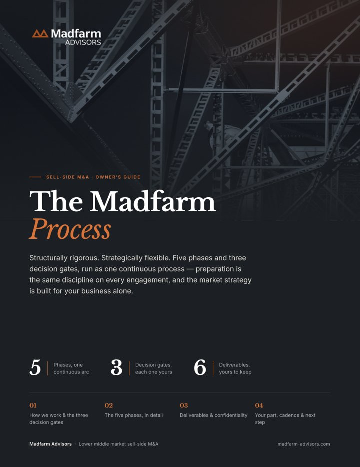

Structurally rigorous. Strategically flexible.
Five phases and three decision gates, run as one continuous process. Preparation is the same discipline on every engagement; the market strategy is built for your business alone. The timeline is scoped to the deal in front of us, never a fixed template.
Two halves of one process. Neither works in isolation.
Preparation is fixed
- The same discipline, in the same order, on every engagement
- Every obstacle surfaced and mitigated before going to market
- A file a buyer can underwrite the day they receive it
Market strategy is built
- Buyer mix, sequencing and process type set to your goals
- Drawn from what preparation reveals, not a playbook
- Designed once, then executed with discipline
Five phases, one continuous arc.
The sequence holds on every deal. The pace does not. Some businesses move quickly and others need room, so we scope the timeline to yours rather than a calendar.
-
Pre-engagement
Evaluation
A discovery session and a preliminary read on value: what the business could command, what a process would look like, and what to address first. No cost, no obligation.
-
Kickoff
Foundation
Goals, data room build, and financial and operational discovery. Short and dense; it sets everything downstream in motion.
-
The core
Preparation
Financial preparation, quality of earnings, market analysis and go-to-market design. The heaviest lifting of the engagement, and what a clean process is built on.
Gate 1 · Launch approval -
In market
Market
Tiered buyer outreach, NDAs and CIM, management meetings, then indications of interest and LOI selection. We name your buyer list from evidence, not on day one.
Gate 2 · LOI selection -
The finish
Close
Confirmatory diligence, definitive agreement, working-capital true-up and funds flow. Thorough preparation is why diligence confirms what’s known instead of uncovering surprises.
Gate 3 · Close
Three decision gates. Six deliverables. Every detail in the guide.
At each gate we stop, and the decision is yours. Along the way we build the materials a buyer will underwrite from, and they stay yours after close. The owner’s guide walks through every phase, gate, and deliverable, plus what we’ll need from you.
- Gate 1Launch approval
- Gate 2LOI selection
- Gate 3Close



Start with a read on value, not a commitment.
The complimentary pre-engagement (a discovery session and a preliminary valuation) comes before any paid work. No cost, no obligation.